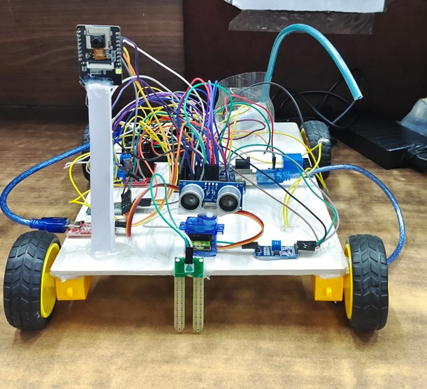

Project Overview
The AI-Powered Agricultural Robot is an innovative, low-cost solution built using Arduino UNO R3 and ESP32-CAM. It enhances eco-friendly farming by automatically detecting plant diseases using AI and spraying pesticides precisely only when needed.
Key Features
AI Disease Detection
AI-Based Plant Disease Detection using ESP32-CAM.
Environmental Monitoring
DHT22, Soil, and Ultrasonic Sensors for full environmental monitoring.
Automated Spraying
Automated Pesticide Spraying via servo-controlled pump.
Autonomous Movement
Autonomous Movement with plant detection stop logic.
Cloud Dashboard
Cloud Dashboard using Firebase for real-time data visualization.
Implementation Steps
- Connect all sensors to Arduino UNO and ESP32-CAM.
- Train AI model using Google Colab and TensorFlow.
- Integrate Firebase Realtime Database for data syncing.
- Build a web and mobile dashboard with Firebase SDK.
- Test on sample plants and deploy in field conditions.
Project Gallery

AI Robot navigating through crops.

Sensor integration with Arduino and ESP32-CAM.

Real-time Firebase dashboard interface.